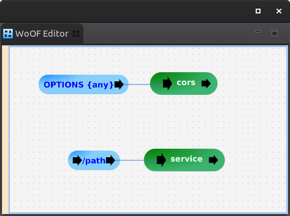

This tutorial demonstrates configuring Cross-Origin Resource Sharing (CORS) handling.
CORS, typically, allows hosting the WoOF server on a different domain to the web site. For example, serving single page static site from a CDN, while logic handled by WoOF servers.
The example used in this tutorial is a simple end point GET /path that will add CORS headers.
CORS will make OPTIONS calls to determine if able to make the request. This can be configured as follows:
The generic path parameter will match any path. This allows servicing CORS OPTIONS requests for any path.
The handling of the request is the following:
public class Cors {
private static HttpHeaderName ALLOW_ORIGIN = new HttpHeaderName("Access-Control-Allow-Origin");
private static HttpHeaderName ALLOW_METHODS = new HttpHeaderName("Access-Control-Allow-Methods");
private static HttpHeaderName ALLOW_HEADERS = new HttpHeaderName("Access-Control-Allow-Headers");
public static HttpHeaderValue ALL = new HttpHeaderValue("*");
@Next("service")
public static void cors(ServerHttpConnection connection) {
HttpResponseHeaders headers = connection.getResponse().getHeaders();
headers.addHeader(ALLOW_ORIGIN, ALL);
headers.addHeader(ALLOW_METHODS, ALL);
headers.addHeader(ALLOW_HEADERS, ALL);
}
}
The above provides very generic CORS handling. More specific CORS handling can use the request path and other aspects of the request.
CORS headers are also required on servicing requests. The WebInterceptServiceFactory provides means to intercept requests before being serviced. This is similar to Servlet Filters.
The CORS intercepting is the following:
public class CorsWebIntercepterServiceFactory implements WebInterceptServiceFactory {
@Override
public Class<?> createService(ServiceContext context) throws Throwable {
return Cors.class;
}
}
This will reuse the CORS logic to add the same CORS headers.
Note that the intercepting logic may only have one input and one output. This is so that the input/output can be hooked into the flow. This does allow other wiring internally within the class.
While this tutorial focuses on CORS, this intercepting can be used for other generic features (e.g. custom security, logging requests, etc).
The following confirms the handling of the OPTIONS requests:
@RegisterExtension
public MockWoofServerExtension server = new MockWoofServerExtension();
@Test
public void options() {
this.doCorsOptionsTest("/");
}
@Test
public void optionsWithPath() {
this.doCorsOptionsTest("/path");
}
@Test
public void optionsWithPathAndQuery() {
this.doCorsOptionsTest("/path?name=value");
}
private void doCorsOptionsTest(String path) {
this.server.send(MockWoofServer.mockRequest(path).method(HttpMethod.OPTIONS)).assertResponse(204, "",
"Access-Control-Allow-Origin", "*", "Access-Control-Allow-Methods", "*", "Access-Control-Allow-Headers",
"*");
}
The following confirms intercepting the request to add the CORS headers:
@Test
public void request() throws Exception {
this.server.send(MockWoofServer.mockRequest("/path")).assertJson(200, new Response("TEST"),
"Access-Control-Allow-Origin", "*");
}
The next tutorial covers modularising configuration.